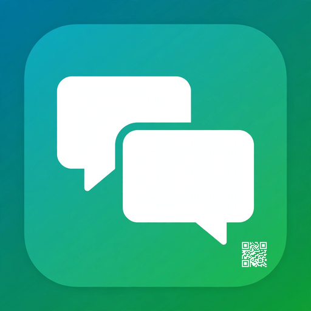

Akses WhatsApp Web dengan tampilan yang dioptimalkan untuk semua perangkat Android, termasuk tablet dengan layar besar dan perangkat non-sertifikasi.
Untuk pengalaman terbaik, buka menu browser dan pilih "Install App" atau "Tambahkan ke Layar Utama".Aplikasi ini tidak berafiliasi dengan WhatsApp LLC.